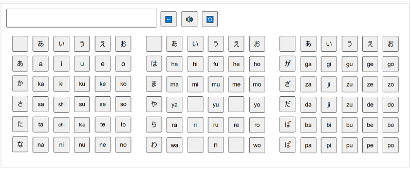

ローマ字の表
制作意図：訓令式・ヘボン式 大文字・小文字に対応するローマ字表教材
国語や外国語（英語）の学習進度に合わせて、必要な文字だけを表示して学べる音声付きのローマ字表教材です。
「大文字・小文字」「訓令式・ヘボン式」の切り替えに対応しており、五十音順や拗音・濁音などの単元に応じて表示範囲を柔軟に変更できます。
視覚的な情報を整理して必要な文字に集中できるため、ローマ字の読み書きや発音の確認にスムーズに取り組むことができます。
音声付きローマ字表
ローマ字一覧表
Javascript
パネルのボタンをクリックすると、対応するローマ字の読み上げ音声が流れます。
・BS：直前に押した１文字を消去
・AC：入力した文字をすべて消去
・🔊：画面上の文字全体を順番に読み上げ
使い方（表示のカスタマイズ）
ファイルをダウンロード後、CSS（style）内のパネル指定を変更して不要な項目を非表示（none）にし、必要なブロック（block / inline-block）のみを有効化して保存してください。
クエリ文字列にひらがなで設定する
roma.html?ch=ひらがな
アドレスバーのURLをブックマークバーにドラッグ
/*
表示制御パラメータ: block / inline-block / none
*/
大文字訓令式
#bk {display:block;}
#bks1 {display:none;} 清音前半
#bks2 {display:none;} 清音後半
#bkd {display:none;} 濁音
#bky1 {display:none;} 清音拗音
#bky2 {display:none;} 濁音拗音
大文字ヘボン式
#bh {display:block;}
#bhs1 {display:inline-block;}
#bhs2 {display:inline-block;}
#bhd {display:none;}
#bhy1 {display:none;}
#bhy2 {display:none;}
小文字訓令式
#sk {display:block;}
#sks1 {display:none;}
#sks2 {display:none;}
#skd {display:none;}
#sky1 {display:none;}
#sky2 {display:none;}
小文字ヘボン式
#sh {display:block;}
#shs1 {display:inline-block;}
#shs2 {display:inline-block;}
#shd {display:none;}
#shy1 {display:none;}
#shy2 {display:none;}
